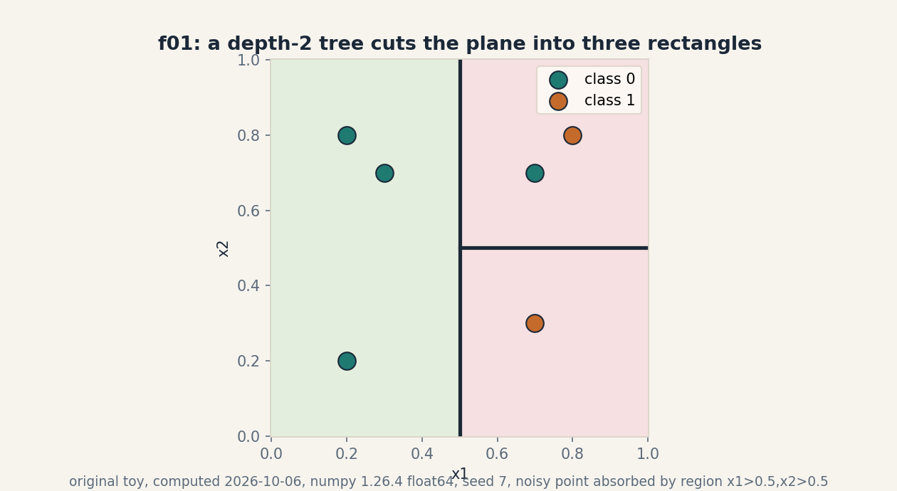
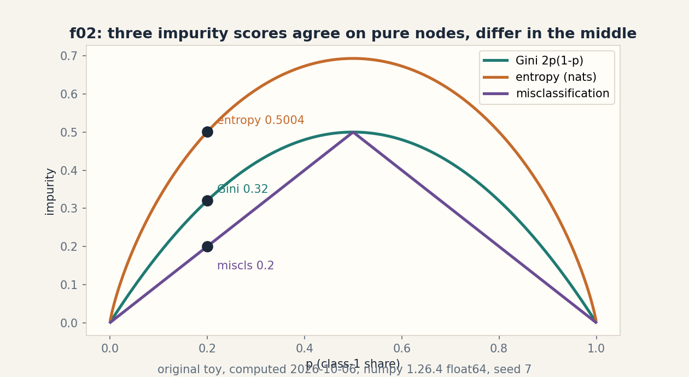
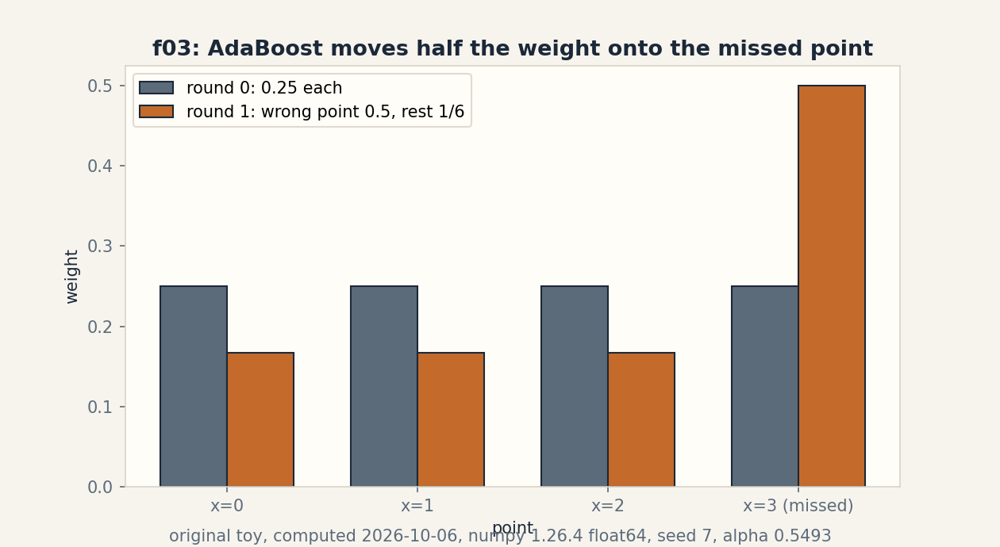
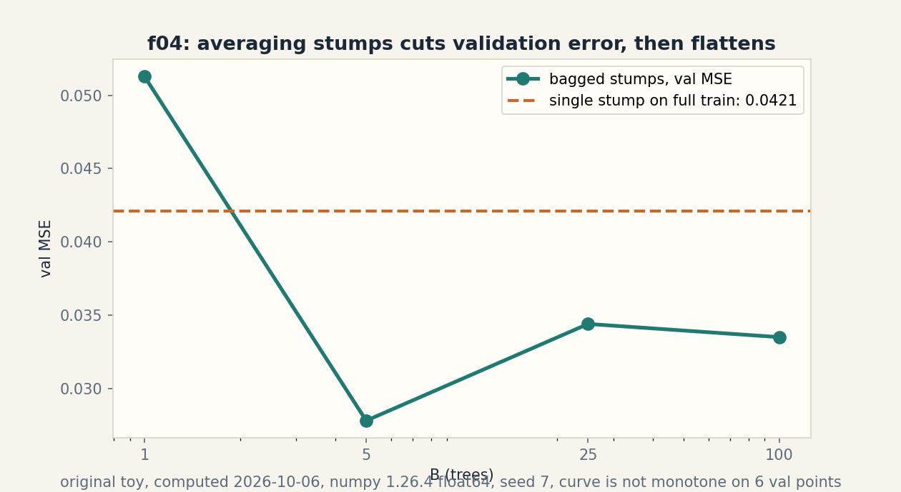

U07 · Trees and ensembles
Lesson 07, Trees and ensembles
Date: 2026-10-06. Unit: math-ml-U07. Leaf concepts C01-C12. Prerequisites: P06, P07, P10. Local remediation R55-R57 in prerequisites.md. Source attribution PENDING on all rows (G2 open: no transcript inspected).
Source mapping
Title map: Lec 54 Decision Trees and Impurity Measures, Lec 55 Regression Trees, Lec 56 Ensemble Methods Bagging and Boosting, Lec 57 Gradient Boosting Algorithm, Lec 58 Ada-Boosting, Lec 59 Cross Validation (titles only, SRC-04). No spoken content inspected. The lesson builds original toys with computed numbers. Each concept keeps the 15-item contract. Figure ids f01-f04 live in assets/u07/ and visual_audit.md.
Scope and objectives
After this lesson the learner can: read a tree as a set of rectangular regions. score a split with Gini, entropy, and misclassification. find the best threshold by scan. explain why deep trees overfit and how a cost penalty prunes them. run bagging, random forests, AdaBoost, and one gradient-boost step by hand. derive the variance formula for averaged models. name what class imbalance does to accuracy. distrust raw feature importance. and beat a baseline before claiming a win.
How to read this lesson
Shell numbers (0-10) mark the Russian-doll ladder position of each step. Numbers marked “computed 2026-10-06” came from compute_completion.py (numpy 1.26.4, float64, seed 7). Predicted versus measured pairs are labeled as such.
C01, decision regions
Shell 0: the question is what a tree predicts at a point that appears in no training row. The toy has six points in the unit square: (0.2,0.2,0), (0.3,0.7,0), (0.2,0.8,0), (0.7,0.3,1), (0.8,0.8,1), (0.7,0.7,0). The last point is label noise.
Shell 1, mental model: a tree cuts the plane with axis-aligned fences. Each fenced rectangle votes the majority label of the training points inside it. The tree in f01 first asks x1 <= 0.5. The left rectangle votes 0 (three zeros). The right side then asks x2 <= 0.5: the lower rectangle votes 1 (one one), the upper rectangle votes 1 by a 1-to-1 tie broken toward 1. Three rectangles, two fences.
Shell 2, objects: x in R^2, region R_j a product of intervals, prediction c_j = majority label in R_j. Assumption: the boundary is axis-aligned. A diagonal true boundary needs many rectangles.
Shell 3, mechanism: prediction is a walk down the fences, then a lookup. New point (0.9, 0.1): x1 > 0.5, x2 <= 0.5, vote 1. Point (0.1, 0.9): x1 <= 0.5, vote 0.
Shell 4, code:
def predict(p):
x1, x2 = p
if x1 <= 0.5: return 0
return 1 if x2 <= 0.5 else 1
Train check: five of six correct. The noisy point (0.7,0.7,0) lands in the upper-right rectangle and loses. Train accuracy 5/6 = 0.8333. Computed 2026-10-06.
Shell 5, check: count points per rectangle: 3, 1, 2. Majority votes 0, 1, 1. The check is the confusion of the six points against the three votes.
Shell 6, costs: prediction costs O(depth). Fit costs O(d n log n) per level for the split scans of C03. Memory holds the tree: O(nodes).
Shell 8, alternative: k nearest neighbors draws Voronoi cells, not rectangles. k-NN adapts to diagonals. trees adapt to axis structure. The selection boundary is the shape of the true boundary.
Shell 7, failure case: the upper-right rectangle absorbed the noisy point and now predicts 1 there. One bad label bought a whole rectangle. This is the overfit seed of C04.
Shell 9, research: oblique trees cut with w.x <= t instead of x_j <= t. Question: does the extra angle search pay for itself on tabular data? Baseline: axis trees with the same depth.
Figure f01 shows the three rectangles, the six points, and both fences. Shell 5 of the visual ladder reuses the region symbol in C04.
C02, impurity
Shell 0: the question is how impure a node is before any split. The toy node holds counts [4, 1]: four of class 0, one of class 1.
Shell 1, mental model: impurity is the error rate of a lazy rule that labels a random point by the node class distribution. Gini: 1 - sum_k p_k^2. Entropy: -sum_k p_k log p_k (nats). Misclassification: 1 - max_k p_k.
Shell 2, objects: p_k = n_k / n, dimensionless. All three are zero at a pure node and peak at p = 0.5 for two classes.
Shell 3, computed numbers. Node [4,1]: p = [0.8, 0.2]. Gini = 1 - (0.64 + 0.04) = 0.32. Entropy = -(0.8 ln 0.8 + 0.2 ln 0.2) = 0.5004. Misclassification = 0.2. Node [2,3]: Gini = 0.48, entropy = 0.6730. Computed 2026-10-06.
Shell 4, code:
def gini(counts):
p = counts / counts.sum()
return 1 - (p ** 2).sum()
Shell 5, check: pure node [5,0] gives 0.0 for all three. Balanced node [3,3] gives Gini 0.5, entropy 0.6931, miscls 0.5.
Shell 6, costs: O(K) per node for K classes. Negligible next to the split scan.
Shell 8, alternatives: entropy punishes near-ties harder than Gini (0.6730 vs 0.48 at [2,3]). in practice both pick similar splits. Misclassification is flat: it sees only the majority class, so many candidate splits tie at the same gain and the greedy search stalls. Selection boundary: use Gini or entropy for growth, misclassification only for final prune scoring.
Shell 7, failure case: a node [100, 1] has Gini 0.0198. A split that isolates the single minority point gains 0.0198 and looks useless, yet that point may be the whole signal. Impurity is blind to class value. C10 returns to this.
Shell 9, research: impurity measures for cost-sensitive splits. Question: does a weighted Gini beat resampling on the C10 toy? Falsifiable: compare F1 on held-out data at fixed depth.
Figure f02 plots all three curves over p with the [4,1] values marked. Shell 5 reuses the p symbol in C03.
C03, splits
Shell 0: the question is which threshold to cut at. The toy: x = [0.1, 0.3, 0.4, 0.6, 0.8, 0.9], y = [0, 0, 0, 1, 1, 1]. Candidate thresholds sit at midpoints: 0.2, 0.35, 0.5, 0.7, 0.85.
Shell 1, mental model: try each fence, score the two sides by weighted impurity, keep the fence with the lowest score. Gain = parent impurity - weighted child impurity.
Shell 2, objects: threshold t, left set {x <= t}, right set {x > t}. Gain is dimensionless, between 0 and parent impurity.
Shell 3, computed numbers. Root Gini: 0.5. Weighted Gini per threshold: 0.2 -> 0.4000, 0.35 -> 0.2500, 0.5 -> 0.0000, 0.7 -> 0.2500, 0.85 -> 0.4000. Gains: 0.1, 0.25, 0.5, 0.25, 0.1. Best: t = 0.5, gain 0.5, both children pure. Computed 2026-10-06.
Shell 4, code: sort x once, sweep t over midpoints, track the running class counts so each candidate costs O(1) after the O(n log n) sort.
Shell 5, check: gain never exceeds the parent impurity 0.5. The two pure children give weighted impurity exactly 0.0.
Shell 6, costs: per node O(d n log n) over d features. Deep trees repeat this at every node: the fit is the expensive part, prediction is cheap.
Shell 8, alternative: histogram binning groups x into B bins first, then scans B candidates. Faster for large n. the bin edges can miss the true best threshold. Selection boundary: exact scan below ~1e5 rows, bins above.
Shell 7, failure case: greedy is myopic. XOR toy: points (0,0)->0, (0,1)->1, (1,0)->1, (1,1)->0. Split x1 <= 0.5: left [0,1] Gini 0.5, right [1,0] Gini 0.5, gain 0. Same for x2. The greedy scan sees zero gain everywhere and stops, yet a depth-2 tree scores 1.0. No single split helps. the pair does. Greedy search cannot see pairs.
Shell 9, research: lookahead split search. Question: does a two-step lookahead beat greedy on parity-like tabular tasks at equal depth? Baseline: greedy depth-3 trees.
Figure: the C03 plate is a table of the five candidates with gains. the honest-medium rule prefers the table over a drawing. The threshold symbol t is reused in C04.
C04, overfit and pruning
Shell 0: the question is how deep is too deep. The toy: eight train points x = [0.1, 0.25, 0.4, 0.55, 0.7, 0.85, 0.95, 1.1] with labels [0, 0, 0, 1, 0, 1, 1, 1] (the point at 0.7 is a label flip), and four validation points [0.2, 0.5, 0.8, 1.0] with clean labels [0, 0, 1, 1].
Shell 1, mental model: each extra level lets the tree draw one more fence. Enough fences and every train point gets its own rectangle: train error 0, but the fences now trace the noise.
Shell 2, objects: depth d, leaf count |T|, train error R(T), cost-complexity score R_alpha(T) = R(T) + alpha |T|. Alpha is the exchange rate between error and leaves.
Shell 3, computed numbers. Depth-1 stump: best t = 0.475, train error 0.125, validation error 0.25. Full memorization: train error 0.0, validation error 0.25 (nearest-train rule). Alpha 0.05: depth-1 cost 0.125 + 0.052 = 0.225. depth-2 cost 0.0 + 0.054 = 0.2, depth-2 wins. Alpha 0.1: 0.325 vs 0.4, the prune step cuts back to depth-1. Computed 2026-10-06.
Shell 4, code: grow the full tree, then collapse the split with the smallest per-leaf gain until the alpha budget bites. That is cost-complexity pruning.
Shell 5, check: validation error never goes below 0.25 here: the flip at 0.7 is pure noise and no tree recovers it. The check is that train error keeps falling while validation stalls.
Shell 6, costs: pruning costs one validation pass per candidate subtree. Cheap next to the fit.
Shell 8, alternative: limit depth or leaf size up front (early stop). Pruning after full growth usually wins because a weak early split can enable a strong later one (the XOR lesson of C03).
Shell 7, failure case: pruning on the train set prunes nothing. the penalty needs honest held-out error. Prune with train error and alpha must be enormous to cut anything, which destroys real splits too.
Shell 9, research: prune with a stability score instead of validation error. Question: does split-frequency across bootstrap replicates pick the same tree as cost-complexity? Falsifiable on the C04 toy at fixed alpha.
Figure: the C04 plate is a table (depth, leaves, train err, val err, alpha cost). Numbers are the claim. a drawing adds no checkable state.
C05, bagging
Shell 0: the question is whether new data can be faked. The toy has n = 4 points. Bagging draws B bootstrap replicates: n draws with replacement from the four points.
Shell 1, mental model: each replicate is a parallel world where some points appear twice and some never appear. Fit one tree per world. Average the votes. The average is calmer than any single tree.
Shell 2, objects: replicate b holds indices i_1..i_n drawn with replacement. About 36.8% of points miss a given replicate in the large-n limit. at n = 6 the exact miss chance is (1 - 1/6)^6 = 0.3349. Computed 2026-10-06.
Shell 3, computed sets, seed 7: rep 0 [2, 2, 3, 3], rep 1 [0, 2, 3, 3], rep 2 [0, 1, 1, 3]. Point 0 misses rep 0. point 1 misses rep 0. point 2 misses rep 2. The missed points are the out-of-bag set of C07.
Shell 4, code:
idx = rng.integers(0, n, size=n) # one bootstrap replicate
tree_b = fit_tree(X[idx], y[idx])
Shell 5, check: each replicate has exactly n draws. the union of a replicate misses at least one point here (rep 0 misses 0 and 1).
Shell 6, costs: B full fits. Embarrassingly parallel across replicates.
Shell 8, alternative: subsampling without replacement (draw m < n). Less duplicate-heavy. slightly different variance profile. Selection boundary: bootstrap is the default. subsample when duplicates cause degenerate trees.
Shell 7, failure case: bagging averages variance away but not bias. XOR stump has error 0.5 and bias 0.5. the average of a hundred such stumps still errs at 0.5. Bagging a biased learner is reheated bias.
Shell 9, research: bagging with deliberately weak randomized splits. Question: does extra split noise lower the tree correlation rho enough to beat plain bagging at fixed B? This is the road to C07.
Figure: the C05 plate is a table of the three replicates with present/missing marks. The replicate is the object. the table shows it.
C06, variance reduction
Shell 0: the question is how much averaging helps, in numbers. The toy: B estimators, each with variance sigma^2 = 1.0, pairwise correlation rho.
Shell 1, mental model: the average of B noisy guesses has variance rho sigma^2 + (1 - rho) sigma^2 / B. The first term is the shared wobble no averaging removes. The second term is the private wobble that 1/B kills.
Shell 2, objects: rho in [0, 1], B >= 1, sigma^2 the single-model variance. Assumption: identical variances and a common pairwise correlation. Real forests violate this. the formula is a guide, not a law.
Shell 3, derivation: Var(mean) = (1/B^2)(sum Var + sum_{i != j} Cov) = sigma^2/B + (B-1) rho sigma^2/B. Rearranged: rho sigma^2 + (1 - rho) sigma^2/B.
Shell 4, computed numbers. rho = 0.3, B = 10: 0.3 + 0.07 = 0.37 against the single-model 1.0. Bagged deep trees, rho = 0.6, B = 100: 0.604. Random forest, rho = 0.2, B = 100: 0.208. Computed 2026-10-06.
Shell 5, check: rho = 1 gives 1.0 for all B (no help). rho = 0 gives 1/B (full help). B = 1 gives 1.0.
Shell 6, costs: variance falls as 1/B but compute rises as B. Past the rho floor, extra trees buy almost nothing: 0.604 at B = 100 vs 0.606 at B = 50 for rho 0.6.
Shell 8, alternative: collect more real data, which cuts both bias and variance. Averaging cuts only the private variance term.
Shell 7, failure case: strongly correlated trees. Deep trees on data with a few dominant features pick the same splits in every replicate: rho near 0.6, and the ensemble variance stalls at 0.6 no matter how large B grows. This is why C07 randomizes the splits.
Shell 9, research: estimate rho on real data from the pairwise disagreement of trees. Question: does the measured rho predict the B at which validation error flattens? Falsifiable with the f04 protocol.
Figure: the C06 plate is an equation block with the three computed rows. The formula is the claim.
Figure f04 (PNG assets/u07/f04_bagging_mse.png) plots the measured counterpart of the rho-floor formula. Bagged-stump validation MSE at B = 1, 5, 25, 100 reads 0.0513, 0.0278, 0.0344, 0.0335. The single-stump line sits at 0.0421. The curve is not monotone: B = 25 scores worse than B = 5 on six validation points. This is Shell 6 in picture form: past the rho floor, extra trees buy almost nothing.
C07, random forests
Shell 0: the question is how to break the tree correlation of C06. The toy reuses the AdaBoost points x = [0,1,2,3], y = [-1,-1,+1,-1], with the bootstrap sets of C05 and three hand stumps: s0 (x <= 1.5), s1 (x <= 2.5), s2 (x <= 0.5).
Shell 1, mental model: a random forest is bootstrap averaging plus one more dice roll: at each split, look at only mtry random features. Trees can no longer all pick the dominant feature, so their errors decorrelate: rho 0.6 -> 0.2 in the C06 arithmetic, variance 0.604 -> 0.208 at B = 100.
Shell 2, objects: mtry, often sqrt(d) for classification and d/3 for regression. Out-of-bag (OOB) prediction for point i: the vote of trees whose replicate missed i.
Shell 3, computed OOB table. Point 0: OOB reps [0], pred -1, true -1. Point 1: OOB reps [0,1], preds [-1,-1], vote -1, true -1. Point 2: OOB reps [2], pred +1, true +1. Point 3: OOB reps none, no prediction. OOB error 0.0 on the three predicted points. In-bag error of s0 alone: 0.25. Computed 2026-10-06.
Shell 4, code: for each point, collect votes from trees with the point out of bag, take the majority.
Shell 5, check: point 3 never went out of bag, so the OOB estimate rests on three points only. The honest note is part of the check.
Shell 6, costs: same B fits as bagging. each split scans mtry features instead of d, so fits run faster.
Shell 8, alternative: extremely randomized trees pick random thresholds too, not just random features. More randomness, lower rho, higher bias. Selection boundary: random forests by default. extra randomization when trees still correlate.
Shell 7, failure case: OOB error is optimistic when duplicates leak across the in-bag/OOB boundary. Near-copy rows let a tree memorize a twin of the OOB point. Also, with small n some points never go OOB (point 3 here) and the estimate is noisy.
Shell 9, research: OOB error as a function of mtry. Question: does the mtry that minimizes OOB error match the mtry that minimizes held-out error? Falsifiable on any tabular set at fixed B and seed.
Figure: the C07 plate is the OOB table. The vote column is the checkable state.
C08, boosting
Shell 0: the question is how to fix errors instead of averaging them away. The toy: x = [0,1,2,3], y = [-1,-1,+1,-1]. Round 1 fits stump s0 (x <= 1.5 -> -1 else +1), which misses only x = 3.
Shell 1, mental model: boosting keeps a weight per point. Missed points get heavier. the next stump must face them. The final vote weights each stump by its accuracy.
Shell 2, objects: weights w_i sum to 1, error eps = sum of weights of missed points, stump vote alpha = 0.5 ln((1 - eps)/eps). Update: w_i <- w_i exp(-alpha y_i h(x_i)), then normalize.
Shell 3, derivation: alpha minimizes the exponential loss sum_i exp(-y_i (F + alpha h(x_i))) over alpha. Set the derivative to zero: alpha = 0.5 ln((1-eps)/eps).
Shell 4, computed numbers. Start w = [0.25]*4. eps = 0.25. alpha = 0.5 ln 3 = 0.5493. Correct points: 0.25 e^-0.5493 = 0.1444 each. the missed point: 0.25 e^0.5493 = 0.4330. Sum 0.8661. Normalized: [1/6, 1/6, 1/6, 1/2]. The missed point now holds half the total weight. Computed 2026-10-06.
Shell 5, check: weights sum to 1.0 after normalization. alpha > 0 because eps < 0.5. If eps > 0.5 the stump is worse than chance and alpha flips sign.
Shell 6, costs: B sequential rounds. each round fits one weak learner on weighted data. Not parallel across rounds.
Shell 8, alternative: gradient boosting (C09) fits residuals instead of reweighting points. Same sequential shape, broader loss menu. Selection boundary: AdaBoost for clean classification, gradient boosting for regression and custom losses.
Shell 7, failure case: the missed point at x = 3 might be a label error. AdaBoost does not know that. round 2 spends half its attention on noise. Boosting chases outliers. The defense is early stop or a loss that resists outliers.
Shell 9, research: the weight trajectory as a diagnostic. Question: does a point whose weight keeps doubling across rounds flag label noise better than a fixed threshold? Falsifiable: inject known flips, measure precision of the flag.
Figure f03 shows the weight bars before and after round 1. Shell 5 reuses the alpha symbol in C09.
C09, residual and gradient view
Shell 0: the question is what boosting fits in regression. The toy: y = [1, 2, 3] at x = [0, 1, 2]. Start F0 = mean = 2.0.
Shell 1, mental model: each round fits the leftover error, the residuals r_i = y_i - F(x_i), then adds a shrunken copy of that fit. Gradient boosting generalizes this: fit the negative gradient of the loss, which equals the residuals for squared loss.
Shell 2, objects: F_m the ensemble after m rounds, r_i = y_i - F_{m-1}(x_i), learning rate nu in (0, 1]. Update: F_m = F_{m-1} + nu h_m, h_m fit to r.
Shell 3, computed numbers. Residuals: [-1, 0, 1], sum 0.0, variance 0.6667. Best stump splits at x = 0.5: left [-1] variance 0, right [0, 1] variance 0.25. Weighted: (1/3)(0) + (2/3)(0.25) = 0.1667. SSE falls from 2.0 to 3(0.1667) = 0.5 in one round. Computed 2026-10-06.
Shell 4, code:
F = np.full(n, y.mean())
for m in range(M):
r = y - F
h = fit_stump(X, r)
F = F + nu * h.predict(X)
Shell 5, check: residuals sum to 0.0 after the mean start. The SSE strictly falls when the stump finds any signal.
Shell 6, costs: M stump fits, sequential. Prediction costs O(M depth).
Shell 8, alternative: Newton boosting (XGBoost) fits a second-order step: -gradient/hessian per leaf. Faster convergence per round, needs the Hessian. Selection boundary: gradient steps for simplicity, Newton steps for tabular accuracy.
Shell 7, failure case: nu = 1 with deep trees memorizes the residuals including noise. validation error turns up after a few rounds. Shrinkage (small nu, more rounds) is the standard defense, at the price of more rounds.
Shell 9, research: the residual spectrum across rounds. Question: does the round at which residual variance stops falling predict the early-stop point? Falsifiable with the C04 validation protocol.
Figure: the C09 plate is an equation block (F0, r, SSE 2.0 -> 0.5). The residual symbol r is reused in labs.
C10, class imbalance
Shell 0: the question is what accuracy hides. The toy: 100 points, 95 negative, 5 positive.
Shell 1, mental model: accuracy counts all mistakes equal. With 95 negatives, a rule that always says negative scores 0.95 and finds zero positives. The business usually prices the two mistakes differently.
Shell 2, objects: precision = TP/(TP+FP), recall = TP/(TP+FN), F1 = 2PR/(P+R), balanced accuracy = (TPR + TNR)/2. All dimensionless.
Shell 3, computed numbers. All-negative rule: accuracy 0.95, recall 0.0, balanced accuracy 0.5. A real model with TP = 4, FP = 5, FN = 1: precision = 4/9 = 0.4444, recall = 4/5 = 0.8, F1 = 2(0.4444)(0.8)/1.2444 = 0.5714. Computed 2026-10-06.
Shell 4, code: build the 2x2 table first, then read all four metrics off it. Never report accuracy alone on skewed data.
Shell 5, check: F1 <= min(precision, recall): 0.5714 <= 0.8. Balanced accuracy of the all-negative rule is exactly 0.5: chance level.
Shell 6, costs: the metrics cost nothing. the fixes (class weights, threshold moves, resampling) cost a validation pass each.
Shell 8, alternatives: class weights scale the loss. threshold moves trade precision for recall along the PR curve. resampling changes the train distribution. Selection boundary: weights first (no data surgery), threshold second, resampling last.
Shell 7, failure case: ROC-AUC can look healthy on skewed data while precision is poor, because true negatives dominate the false-positive rate. With rare positives, read the PR curve, not ROC.
Shell 9, research: threshold selection under asymmetric costs. Question: does the cost-optimal threshold on validation hold under the distribution shift of C12? Falsifiable with a shifted test split.
Figure: the C10 plate is a table (rule, accuracy, precision, recall, F1). The table is the verdict.
C11, feature importance limitations
Shell 0: the question is whether importance means causation. The toy: four points, x1 = [0,0,1,1], x2 = x1 exactly, y = [0,0,1,1].
Shell 1, mental model: importance counts how much impurity each feature removed in this tree. The tree splits on x1 at 0.5, gain 0.5, and never touches x2. Reported importance: x1 = 0.5, x2 = 0.0. Yet x2 alone predicts y perfectly.
Shell 2, objects: gain importance sums the impurity gain at splits on each feature, normalized. It is a property of the fitted tree, not of the world.
Shell 3, computed check. Permute x1 across the four points: accuracy falls to 0.5. Permute x2: accuracy stays 1.0, because the tree never reads x2. Same data, opposite verdicts: the tree’s reading, not the truth.
Shell 4, code: permutation importance shuffles one column at a time on held-out data and records the score drop.
Shell 5, check: x1 and x2 have correlation 1.0. Any split credit is arbitrary between them. the tie-break is the feature order, not the physics.
Shell 6, costs: permutation importance costs d validation passes. Cheap and honest.
Shell 8, alternative: drop-column retraining (expensive, causal-ish), SHAP values (per-prediction, still model-bound). Selection boundary: permutation for a quick audit, drop-column when the decision matters.
Shell 7, failure case: two teams read the same forest. Team A reports “x2 is useless” from gain importance and drops the sensor. Team B keeps it. The sensor was the cheap redundant backup. dropping it removed the only spare. Importance is not a deletion license.
Shell 9, research: conditional permutation importance. Question: does permuting x2 within x1-bins restore its credit on the toy? Falsifiable: the binned score drop should rise from 0.
Figure: the C11 plate is a table (feature, gain importance, permutation drop). Two columns disagree. that disagreement is the lesson.
C12, baseline evaluation
Shell 0: the question is whether the model beats nothing. The toy is the six-point set of C03.
Shell 1, mental model: every score needs a dumb reference next to it. Majority vote, stratified random guessing, and a one-rule model are the three rungs. A model that cannot beat them learned nothing.
Shell 2, objects: majority baseline predicts the train majority. stratified random guesses by the train class shares. one-rule is the C03 stump.
Shell 3, computed numbers. Majority (predict 0): accuracy 3/6 = 0.5. Stratified random: expected accuracy 0.5^2 + 0.5^2 = 0.5. Stump at t = 0.5: accuracy 6/6 = 1.0. The stump clears the bar by 0.5. Computed 2026-10-06.
Shell 4, code: score the baseline on the same split with the same metric before fitting anything smart.
Shell 5, check: the baseline uses train statistics only. A baseline that peeks at test labels is not a baseline.
Shell 6, costs: trivial. Skipping it costs embarrassment.
Shell 8, alternative: a linear model as the smart baseline for nonlinear contenders. Selection boundary: dumb baseline always. linear baseline when the contender is nonlinear.
Shell 7, failure case: the fancy ensemble ties the majority baseline on a hard, noisy task. The honest report says so and ships the baseline. Complexity without a beat is decoration.
Shell 9, research: baseline-first reporting discipline. Question: across published tabular benchmarks, how often does a tuned baseline erase the claimed gain? This is a literature audit, falsifiable by reproduction.
Figure: the C12 plate is a table (model, accuracy). Three rows. the bar is visible.
Rendered figures
Each figure below is an original PNG rendered with matplotlib 3.6.3 (Agg) at dpi 150, opened and read on 2026-10-06. The caption names the source and the russian-doll shell. The alt text describes the image.
Figure f01 (u07-c01)

Caption: Three tree regions, six points, and two split fences. Source: original. Shell: 3 (computed before/after).
Figure f02 (u07-c02)

Caption: Three impurity curves over p with the node 4,1 values marked. Source: original. Shell: 3 (computed before/after).
Figure f03 (u07-c08)

Caption: Weight bars before and after round 1, with the missed point at one half. Source: original. Shell: 3 (computed before/after).
Figure f04 (u07-c05/c06)

Caption: Bagged-stump validation MSE across B with the non-monotone curve and the single-stump line at 0.0421. Source: original. Shell: 3 (computed before/after).
Not yet understood, dependency list
- R55 recursive partition idea: assumed from P10. local bridge in prerequisites.md.
- R56 bootstrap from zero: assumed from P07. local bridge in prerequisites.md.
- R57 class scores from counts: assumed from P06/P10. local bridge in prerequisites.md.
- The XOR myopia of C03: understood as a fact. the general lookahead theory is beyond this lesson.
- Exact finite-sample distribution of OOB error: open. the lesson uses the honest three-point note.
Exercises E01-E30
E01. State the three rectangles of the C01 tree and the vote of each. E02. Predict the label of (0.9, 0.1) and (0.1, 0.9) with the C01 tree. Show the walk. E03. Compute Gini, entropy (nats), and misclassification for counts [9, 1]. No computer. E04. A node has counts [6, 6]. Compute all three impurity scores. No computer. E05. On the C03 toy, compute the weighted Gini at t = 0.7 by hand and confirm 0.25. E06. Prove the gain at t = 0.5 on the C03 toy equals the parent Gini. What does that say about the children? E07. XOR toy: compute the gain of the split x1 <= 0.5 with Gini. Then with entropy. Both zero? E08. Depth-1 toy: verify the train error 0.125 by listing which point the stump at t = 0.475 misses. E09. With alpha = 0.2, which tree does cost-complexity pick on the C04 numbers? Show the arithmetic. E10. List all 4^4 = 256 bootstrap replicates? No: explain in two sentences why enumeration is hopeless at n = 1000. E11. For n = 4, what is the exact chance a given point misses one replicate? Compute (3/4)^4. E12. Derive the variance formula of C06 from Var(mean) = (1/B^2)(sum Var + sum Cov). Show each step. E13. With rho = 0.9 and B = 1000, what is the ensemble variance as a fraction of sigma^2? Interpret. E14. On the C07 OOB table, what changes if rep 2 were [0, 1, 2, 3]? Recompute point 2’s OOB prediction. E15. AdaBoost: with eps = 0.4 compute alpha. With eps = 0.1 compute alpha. Which round votes louder? E16. After round 1 of C08, write the new weight vector as exact fractions. Verify the sum. E17. Suppose the point x = 3 in C08 is a label error. Predict qualitatively what round 2 does. Then state the defense. E18. On y = [1, 2, 3], compute the residuals after F0 and verify they sum to zero. E19. With nu = 0.5, compute F1 after one gradient-boost round on the C09 toy, assuming the stump predicts the left mean -1 and right mean 0.5. E20. Derive r_i = y_i - F(x_i) as the negative gradient of (1/2)(y - F)^2. Show the derivative. E21. On the 100-point imbalance toy, compute the accuracy of a rule that predicts positive always. Compare with the all-negative rule. E22. With TP = 4, FP = 5, FN = 1, compute precision, recall, F1, and balanced accuracy (TNR = 90/95). E23. Explain why ROC-AUC can stay high while precision is 0.44. Name the mechanism in one paragraph. E24. On the C11 toy, compute the Gini gain of a split on x2 at 0.5. Compare with the x1 gain. E25. Design a two-feature toy where gain importance ranks the useless feature first. Give numbers. E26. Compute the expected accuracy of stratified random guessing on a 70/30 split. Show the arithmetic. E27. Your model scores 0.83 on the C01 toy and the majority baseline scores 0.5. Is the model good? Argue both sides in three sentences. E28. A stump gets 0.5 on the C03 toy (it cannot beat the toy). Wait: it gets 1.0. Explain why a stump is the right baseline here and when it would be the wrong one. E29. Write the predict function for the C01 tree in code and assert the six train predictions. E30. Research: pick one Shell 9 question from C01-C12 and write a falsifiable hypothesis with a baseline and a metric. One paragraph.
Deep ladders L01-L10
L01. Regions to rectangles. (1) Define a decision region. (2) Toy: the C01 rectangles. (3) Derive why every region is a product of intervals. (4) Implement predict for a depth-3 tree. (5) Changed constraint: the fence may use x1 + x2 <= t. Which regions stop being rectangles?
L02. Impurity choice. (1) Define Gini in one sentence. (2) Toy: [4,1] scores. (3) Derive Gini as the lazy-rule error rate. (4) Implement the split scan with Gini and with entropy. compare the chosen thresholds on the C03 toy. (5) Critique: when would you pay for entropy over Gini?
L03. Greedy myopia. (1) Define gain. (2) Toy: C03 best split. (3) Explain why the scan is greedy. (4) Code the XOR counterexample and show zero gain everywhere. (5) Design: propose a two-step lookahead and name its cost.
L04. Prune or stop. (1) Define R_alpha. (2) Toy: the alpha 0.05 vs 0.1 verdicts. (3) Derive why pruning after full growth beats early stop (use XOR). (4) Implement cost-complexity pruning on the C04 toy. (5) Failure: prune on train error. What breaks?
L05. Bootstrap honesty. (1) Define a bootstrap replicate. (2) Toy: the three seed-7 sets. (3) Derive the (1-1/n)^n miss chance and its 1/e limit. (4) Implement OOB prediction for the C07 toy. (5) Changed constraint: n = 10^6. Which part of the protocol breaks first?
L06. The rho floor. (1) State the variance formula. (2) Toy: 0.37 vs 0.604 vs 0.208. (3) Derive the rearrangement. (4) Implement a measurement of rho from pairwise tree disagreement on the C04 data. (5) Critique: the formula assumes equal variances. When does that fail?
L07. Boost the hard point. (1) Define alpha. (2) Toy: eps 0.25 -> weights [1/6,1/6,1/6,1/2]. (3) Derive alpha from the exponential loss. (4) Implement two AdaBoost rounds on the C08 toy. (5) Debug: see interview T1.
L08. Gradients as targets. (1) Define the residual. (2) Toy: SSE 2.0 -> 0.5. (3) Derive the residual as a negative gradient. (4) Implement one gradient-boost round with nu = 0.3. (5) Compare with AdaBoost: which loss does each minimize?
L09. Imbalance audit. (1) Define precision and recall. (2) Toy: 0.4444 / 0.8 / 0.5714. (3) Derive F1 as the harmonic mean and explain why harmonic, not arithmetic. (4) Implement the PR curve for a scored toy. (5) Scenario: fraud at 1 in 10^4. Which metric do you report to the risk team, and why?
L10. Importance interrogation. (1) Define gain importance. (2) Toy: x1 0.5, x2 0.0, both perfect. (3) Explain the tie-break mechanism. (4) Implement permutation importance on the C11 toy. (5) Research critique: “the model says x2 is useless.” Attack with two numbers from the lesson.